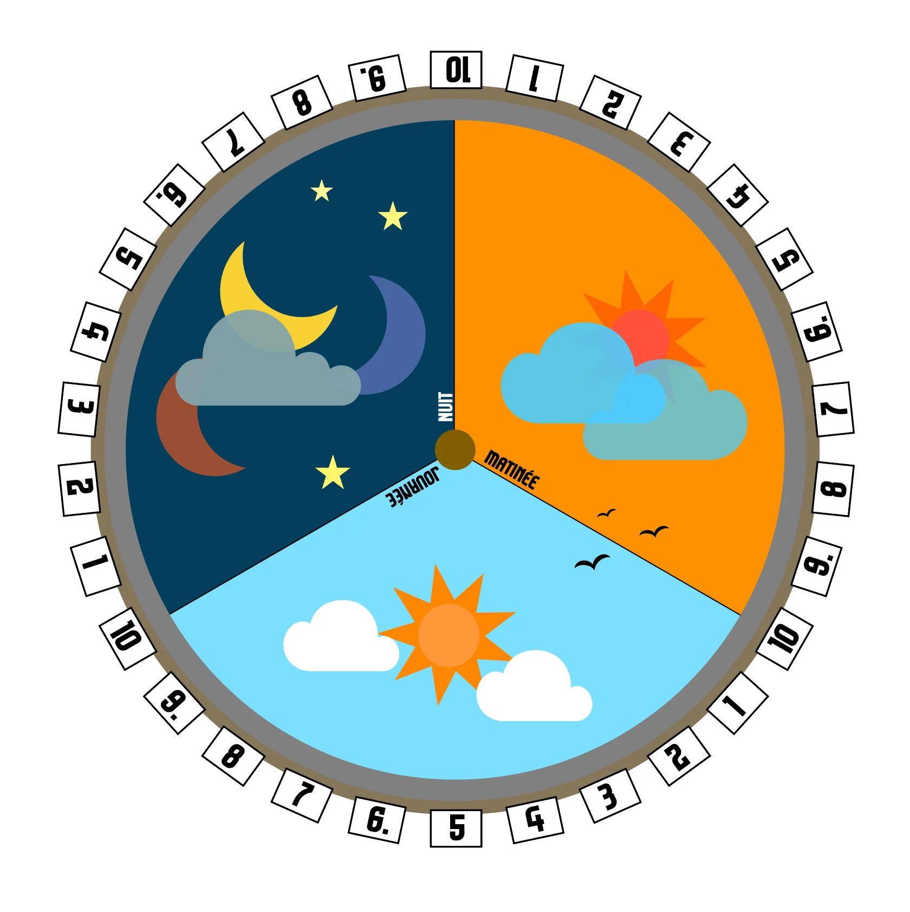

Héos est une planète dans une galaxie bien éloignée de la Terre.
Une journée sur Héos dure 30 heures, qu'on a coutume de diviser en 3 parties égales (10 heures de matinée, 10 heures de journée et 10 heures de nuit).
Pour aider vos joueurs à situer le moment de la journée dans ce monde, voici une image d'horloge que vous pouvez imprimer et laisser sur la table de jeu. Un jeton peut tout à fait faire office de marqueur temporel, en le déplacant le long du cadran.
Horloge héossienne
